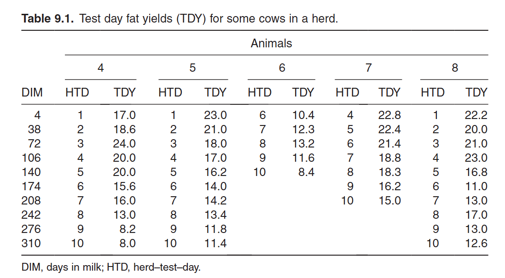
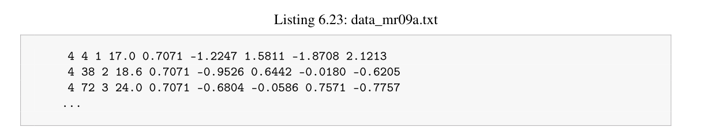
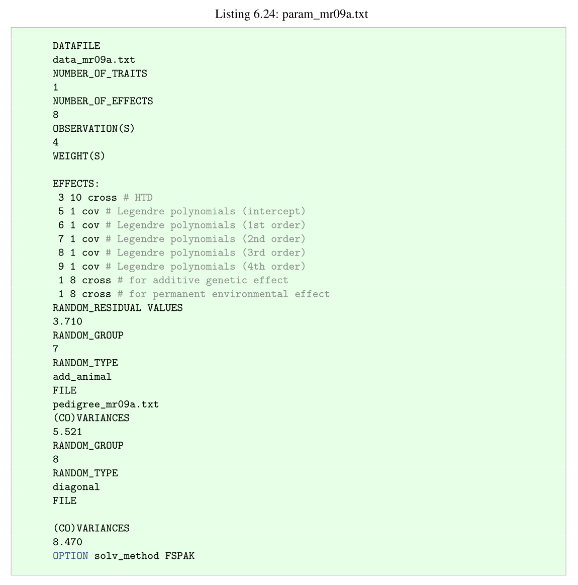
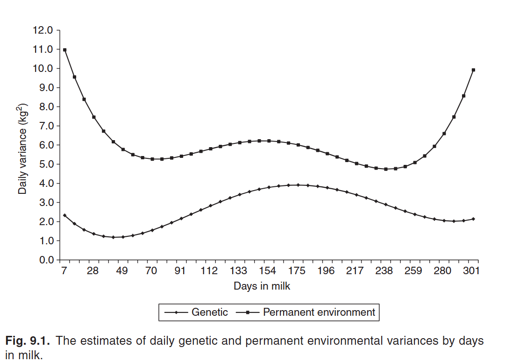
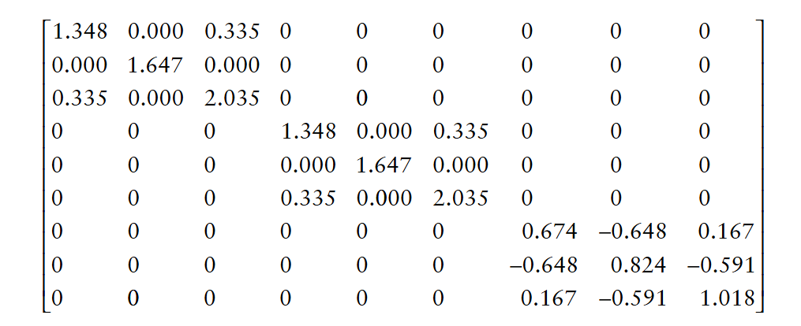
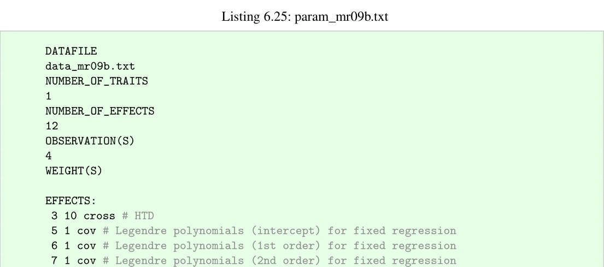
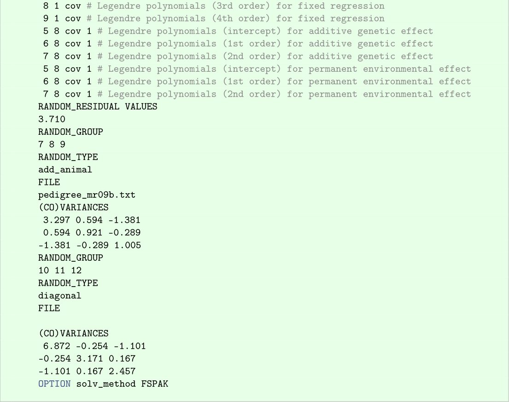

<!DOCTYPE html>


<html lang="zh-CN">


<head>
  <meta name="baidu-site-verification" content="codeva-NSg7ynviLa" />
  <meta charset="utf-8" />
    
  <meta name="viewport" content="width=device-width, initial-scale=1, maximum-scale=1" />
  <title>
    使用blupf90运行测定日模型 |  
  </title>
  <meta name="generator" content="hexo-theme-ayer">
  
  <link rel="shortcut icon" href="/images/mojie.jpg" />
  
  
<link rel="stylesheet" href="/dist/main.css">

  <link rel="stylesheet" href="https://cdn.jsdelivr.net/gh/Shen-Yu/cdn/css/remixicon.min.css">
  
<link rel="stylesheet" href="/css/custom.css">

  
  <script src="https://cdn.jsdelivr.net/npm/pace-js@1.0.2/pace.min.js"></script>
  
  

  

<link rel="alternate" href="/atom.xml" title="null" type="application/atom+xml">
</head>

</html>

<body>
  <div id="app">
    
      
    <main class="content on">
      <section class="outer">
  <article
  id="post-使用blupf90运行测定日模型"
  class="article article-type-post"
  itemscope
  itemprop="blogPost"
  data-scroll-reveal
>
  <div class="article-inner">
    
    <header class="article-header">
       
<h1 class="article-title sea-center" style="border-left:0" itemprop="name">
  使用blupf90运行测定日模型
</h1>
 

    </header>
     
    <div class="article-meta">
      <a href="/posts/868d13f0/" class="article-date">
  <time datetime="2025-12-29T08:37:25.000Z" itemprop="datePublished">2025-12-29</time>
</a> 
  <div class="article-category">
    <a class="article-category-link" href="/categories/%E6%95%B0%E6%8D%AE%E5%88%86%E6%9E%90/">数据分析</a> / <a class="article-category-link" href="/categories/%E6%95%B0%E6%8D%AE%E5%88%86%E6%9E%90/blupf90/">blupf90</a>
  </div>
  
<div class="word_count">
    <span class="post-time">
        <span class="post-meta-item-icon">
            <i class="ri-quill-pen-line"></i>
            <span class="post-meta-item-text"> 字数统计:</span>
            <span class="post-count">7.1k</span>
        </span>
    </span>

    <span class="post-time">
        &nbsp; | &nbsp;
        <span class="post-meta-item-icon">
            <i class="ri-book-open-line"></i>
            <span class="post-meta-item-text"> 阅读时长≈</span>
            <span class="post-count">28 分钟</span>
        </span>
    </span>
</div>
 
    </div>
      
    <div class="tocbot"></div>


  
    <div class="article-entry" itemprop="articleBody">
       
  <link rel="stylesheet" type="text/css" href="https://cdn.jsdelivr.net/hint.css/2.4.1/hint.min.css"><p>使用blupf90运行测定日模型</p>
<span id="more"></span>
<h1>测定日模型</h1>
<p>重复力模型的一个基本假设是重复度量的记录值之间的遗传相关是 1 ，但是重复力模型用在奶牛的产奶性状的缺点在于，奶牛的产奶性状在整个产奶周期其均值和方差不断发生变化，也有文献指出产奶量的遗传力随着产奶日期而变化，并且重复度量的性状之间的遗传相关会因为两次度量的时间间隔增长而趋于降低，而重复力模型无法解释这种随着时间变化的协方差结构。</p>
<p>多性状模型假设不同性状的遗传机理不同但是彼此相关，因此当需要考虑不同记录值的遗传相关时，多性状模型相比于重复力模型更佳。但是当记录值的重复次数很多时，此时使用多性状模型需要估计的参数过多，难以得到准确的遗传参数。</p>
<p>分析这种随着时间或年龄变化的重复度量性状，其合适的模型应该能够解释其均值和协方差结构随着时间变化，并且可以做到有效估计需要的遗传参数。在1994年，Schaeffer 和 Dekkers 引入了随机回归(RR)模型的概念，用于分析奶牛的测定日数据。同时， Kirkpatrick  et  al.  (1990,  1994)  引入了协方差函数 (covariance functions, CFs) 来实现纵向数据的分析。Schaeffer (2004) 概述了RR模型在动物育种中各类数据中的应用情况。在RR模型发展之前， Ptak and Schaefer (1993) 通过使用固定回归模型（fixed regression model）来分析产奶量性状。</p>
<h2 id="勒让德多项式详解">勒让德多项式详解</h2>
<p>看不懂。。。</p>
<p>勒让德多项式（Legendre polynomials）是<strong>勒让德微分方程</strong>在特定条件下的多项式解，其标准形式为：</p>
<p style=""></p><p>当参数 $ n $ 为非负整数时，方程在区间  内存在有界解，这些解构成一组正交多项式序列。</p>
<p>其显式表达式可通过**罗德里格公式（Rodrigues’ formula）**表示：</p>
<p style=""></p><p>此公式直接生成 $ n $ 阶多项式，例如 $ P_0(x) = 1  P_1(x) = x  P_2(x) = \frac{1}{2}(3x^2 - 1) $ 等。</p>
<p>其递推公式如下</p>
<p style=""></p><p>此关系用于高效计算高阶多项式，例如由 $ P_0 $ 和 $ P_1 $ 推导 $ P_2 $。<br>
因此，我们可以通过递推公式得到下面的表达式</p>
<p style=""></p><h3 id="实际计算公式">实际计算公式</h3>
<p>参考《Linear models for the prediction of animal breeding values》附录G，写出R代码如下（这里代码中命名有点问题，归一化后的 DIM 不能叫做 HTD ，这是两个概念）</p>
<figure class="highlight r"><table><tr><td class="gutter"><pre><span class="line">1</span><br><span class="line">2</span><br><span class="line">3</span><br><span class="line">4</span><br><span class="line">5</span><br><span class="line">6</span><br><span class="line">7</span><br><span class="line">8</span><br><span class="line">9</span><br><span class="line">10</span><br></pre></td><td class="code"><pre><span class="line"><span class="comment">### Legendre covariable</span></span><br><span class="line">Legendre <span class="operator">&lt;-</span><span class="keyword">function</span><span class="punctuation">(</span>x<span class="punctuation">,</span>Xmax<span class="punctuation">,</span>Xmin<span class="punctuation">)</span><span class="punctuation">&#123;</span></span><br><span class="line">  HTD<span class="operator">&lt;-</span><span class="punctuation">(</span><span class="number">2</span><span class="operator">*</span><span class="punctuation">(</span>x<span class="operator">-</span>Xmin<span class="punctuation">)</span><span class="operator">/</span><span class="punctuation">(</span>Xmax<span class="operator">-</span>Xmin<span class="punctuation">)</span><span class="punctuation">)</span><span class="operator">-</span><span class="number">1</span></span><br><span class="line">  mat<span class="operator">&lt;-</span><span class="built_in">c</span><span class="punctuation">(</span><span class="number">0.7071</span><span class="punctuation">,</span><span class="number">0</span><span class="punctuation">,</span><span class="number">0</span><span class="punctuation">,</span><span class="number">0</span><span class="punctuation">,</span><span class="number">0</span><span class="punctuation">)</span></span><br><span class="line">  mat<span class="punctuation">[</span><span class="number">2</span><span class="punctuation">]</span><span class="operator">&lt;-</span><span class="punctuation">(</span><span class="punctuation">(</span><span class="number">3</span><span class="operator">/</span><span class="number">2</span><span class="punctuation">)</span><span class="operator">**</span><span class="number">0.5</span><span class="punctuation">)</span><span class="operator">*</span>HTD</span><br><span class="line">  mat<span class="punctuation">[</span><span class="number">3</span><span class="punctuation">]</span><span class="operator">&lt;-</span><span class="punctuation">(</span><span class="punctuation">(</span><span class="number">45</span><span class="operator">/</span><span class="number">8</span><span class="punctuation">)</span><span class="operator">**</span><span class="number">0.5</span><span class="punctuation">)</span><span class="operator">*</span>HTD<span class="operator">^</span><span class="number">2</span><span class="operator">-</span><span class="punctuation">(</span><span class="number">5</span><span class="operator">/</span><span class="number">8</span><span class="punctuation">)</span><span class="operator">^</span><span class="number">0.5</span></span><br><span class="line">  mat<span class="punctuation">[</span><span class="number">4</span><span class="punctuation">]</span><span class="operator">&lt;-</span><span class="punctuation">(</span><span class="punctuation">(</span><span class="number">175</span><span class="operator">/</span><span class="number">8</span><span class="punctuation">)</span><span class="operator">**</span><span class="number">0.5</span><span class="punctuation">)</span><span class="operator">*</span>HTD<span class="operator">^</span><span class="number">3</span><span class="operator">-</span><span class="punctuation">(</span><span class="number">63</span><span class="operator">/</span><span class="number">8</span><span class="punctuation">)</span><span class="operator">^</span><span class="number">0.5</span><span class="operator">*</span>HTD</span><br><span class="line">  mat<span class="punctuation">[</span><span class="number">5</span><span class="punctuation">]</span><span class="operator">&lt;-</span><span class="number">9.2808</span><span class="operator">*</span>HTD<span class="operator">^</span><span class="number">4</span><span class="operator">-</span><span class="number">7.9550</span><span class="operator">*</span>HTD<span class="operator">^</span><span class="number">2</span><span class="operator">+</span><span class="number">0.7955</span></span><br><span class="line">  <span class="built_in">return</span><span class="punctuation">(</span>mat<span class="punctuation">)</span></span><br><span class="line"><span class="punctuation">&#125;</span></span><br></pre></td></tr></table></figure>
<p>具体解释如下</p>
<p><strong>1. 变量归一化处理</strong></p>
<p>代码中的 <code>HTD = (2*(x - Xmin)/(Xmax - Xmin)) - 1</code> 将变量从区间 <code>[Xmin, Xmax]</code> 线性映射到 <code>[-1, 1]</code>。这是Legendre多项式的标准定义域。</p>
<hr>
<p><strong>2. 归一化Legendre多项式公式</strong></p>
<p>Legendre多项式通常通过 <strong>罗德里格公式（Rodrigues’ Formula）</strong> 定义：</p>
<p style=""></p><p>但在实际应用中，常对其进行<strong>归一化</strong>以满足正交性条件（大概理解了，参考<a target="_blank" rel="noopener" href="https://blog.csdn.net/certate/article/details/109039699">勒让德多项式的正交性和归一化</a>, 这个公式的意义就是使得勒让德多项式的模为1）：</p>
<p style=""></p><p>代码中的系数与归一化后的形式一致。</p>
<hr>
<p><strong>3. 代码中各阶多项式解析</strong></p>
<p><strong>(1) 0阶项 <code>mat[1]</code></strong></p>
<p>• 代码值：<code>0.7071</code><br>
• 对应公式：</p>
<p style=""></p><p>出处：归一化条件。</p>
<p><strong>(2) 1阶项 <code>mat[2]</code></strong></p>
<p>• 代码值：<code>sqrt(3/2) * HTD</code><br>
• 对应公式：</p>
<p style=""></p><p>出处：Legendre多项式的一次项展开。</p>
<p><strong>(3) 2阶项 <code>mat[3]</code></strong></p>
<p>• 代码值：<code>sqrt(45/8) * HTD^2 - sqrt(5/8)</code><br>
• 对应公式：</p>
<p style=""></p><p>出处：二次项展开及归一化。</p>
<p><strong>(4) 3阶项 <code>mat[4]</code></strong></p>
<p>• 代码值：<code>sqrt(175/8) * HTD^3 - sqrt(63/8) * HTD</code><br>
• 对应公式：</p>
<p style=""></p><p>出处：三次项展开及归一化。</p>
<p><strong>(5) 4阶项 <code>mat[5]</code></strong></p>
<p>• 代码值：<code>9.2808 * HTD^4 - 7.9550 * HTD^2 + 0.7955</code><br>
• 对应公式：</p>
<p style=""></p><p>出处：四次项展开及数值近似。</p>
<h1>固定回归模型</h1>
<p>固定回归模型的理论框架见文献 Ptak and Schaefer (1993)  。模型中直接使用了测定日的记录值，因此避免了直接将测定日的奶产量直接扩展为 305天产奶量（我的理解是是不是之前的分析都是先计算出305天产奶量，再将305天产奶量作为性状），并且在模型中添加了测定日效应（herd-test-day, HTD）用于解释所有母牛在某一天受到的影响。这个模型还能解释在相同年龄、相同季节、相同地区的母牛的一般泌乳曲线。</p>
<p>和重复力模型相似，固定回归模型假定在一个泌乳周期的测定日的记录值是同一个性状的重复度量值，即测定日记录值之间的遗传相关为1。通常模型中还会添加永久环境效应，模型形式如下</p>
<p style=""></p><p>其中  是在测定日  ， HTD子集  ，母牛  的记录值； 是固定回归系数； 和  是母牛  的加性效应和永久环境效应， 是对于母牛  在测定日  的测定日记录的 第  个勒让德多项式（Legendre polynomials o）， 是勒让德多项式用于拟合固定泌乳曲线的阶数， 是随机残差。</p>
<p>用矩阵形式，模型可以写作如下</p>
<p style=""></p><p>其中  是测定日产奶量的向量， 是 HTD 和 固定回归系数的解向量（看来这里勒让德多项式应该是作为协变量）， 和  是加性效应和永久环境效应的向量。假设  ，   ，   。</p>
<p>混合模型方程组如下（这里就是很正常的公式）</p>
<p style=""></p><p>举个例子，假设我们有 5头母牛的测定日的乳脂量的数据，具有HTD信息和乳脂记录值，我们的目的是估计 HTD效应的子，4阶勒让德多项式的回归系数，永久环境效应和加性效应的子。</p>
<p>表型数据如下，这里有2列可以作为测定时间变量的列，第一个 <strong>DIM （Days in Milk，泌乳天数）<strong>指奶牛自产犊后开始泌乳以来经过的天数，是</strong>个体层次</strong>的连续变量。例如，一头奶牛产犊后第50天，其DIM为50。第二个 <strong>HTD（Herd–Test–Day，牛群-测试-日）</strong> ，指在特定日期对某一牛群进行生产性能测试的记录，是<strong>群体层次</strong>的分类变量。例如：“牛群A在2023-10-05的测试日数据”，一般可能作为固定效应，消除不同测试日（如季节、管理差异）对结果的干扰。</p>
<p></p>
<p>但是在这个案例中，通过附录G可以看到，这里是对<strong>归一化的DIM</strong>进行计算得到了 Legendre多项式，这里其实是计算得到了一个矩阵  ，是一个 10 × 5 的矩阵，每一行就是 <strong>DIM</strong> 从低到高的10个水平，每一列就是 0阶到 4阶的 Legendre多项式 。</p>
<p>在 blupf90 官方文档中，运行固定效应如下，首先表型数据如下</p>
<p></p>
<p>各列内容说明如下</p>
<ol>
<li>个体号</li>
<li>泌乳天数（DIM）</li>
<li>牛群-测试-日效应（HTD）</li>
<li>乳脂量</li>
<li>0阶Legendre多项式（由DIM计算得到）</li>
<li>1阶Legendre多项式</li>
<li>2阶Legendre多项式</li>
<li>3阶Legendre多项式</li>
<li>4阶Legendre多项式</li>
</ol>
<p>参数卡内容如下，可以看到和常规模型差不多，只是将 Legendre多项式 作为协变量（固定因子）加入到模型中。</p>
<p></p>
<p>求解得到解向量之后，我们可以通过多项式的回归系数来画出泌乳曲线。在实际计算中，固定回归的协变量会嵌套与某个环境变量中，这样不同群体的奶牛可以画出不同的泌乳曲线，因此我们可以检验不同环境因素对泌乳曲线的影响。但是在我们的例子中，我们只能画出一条适用于所有母牛的一条泌乳曲线。一个泌乳天数从4到310天的实际乳脂量的向量  计算如下</p>
<p style=""></p><p>这里   是一个 10 × 5 的矩阵，每一行就是 <strong>DIM</strong> 从低到高的10个水平，每一列就是 0阶到 4阶的 Legendre多项式 。 应该就是5个估计出的协变量的值组成的向量。二者的矩阵乘积就是计算出  <strong>DIM</strong>  每一个水平的回归项之和。</p>
<p>最终计算出每个水平的实际乳脂量如下（标题顺序乱了，凑合看吧，就是这么个意思）</p>
<p style=""></p><p>因此我们可以基于这个结果画出一条泌乳曲线。</p>
<p>这里我们求解得到的 EBV 是一天的乳脂量，由于我们假设测定日记录值之间的遗传相关为1，因此<strong>305天产奶量就是这里的 EBV值乘以 305</strong> 。</p>
<h1>随机回归模型</h1>
<h2 id="1-背景：固定回归模型的局限性"><strong>1. 背景：固定回归模型的局限性</strong></h2>
<p><strong>问题1：仅描述群体平均泌乳曲线</strong></p>
<ul>
<li><strong>固定回归模型</strong>：在模型中引入<strong>泌乳天数（DIM）<strong>作为固定效应，可以拟合不同牛群的</strong>平均泌乳曲线</strong>（例如高产群 vs. 低产群的整体趋势）。</li>
<li>局限性：
<ul>
<li>它假设所有奶牛的泌乳曲线形状完全由群体决定，忽略了个体间遗传差异对曲线形状（如高峰期、下降速度）的影响。</li>
<li>因此，估计的**育种值（遗传优势）**只能反映奶牛在泌乳高峰期（曲线顶点）的遗传差异，而无法捕捉整个泌乳周期的遗传特性（如持久性）。</li>
<li>不同泌乳天数的性状之间的遗传力假设为1，即所有测定日的性状均是同一个性状，这可能不符合实际情况。</li>
</ul>
</li>
</ul>
<p><strong>问题2：忽略遗传协方差结构</strong></p>
<ul>
<li>固定回归模型可以调整<strong>不同泌乳阶段的残差异质性</strong>（例如泌乳初期误差大、后期误差小），但未考虑<strong>遗传效应随泌乳阶段的变化</strong>。</li>
<li>例如，一头奶牛可能在泌乳初期遗传优势显著，但另一头在后期表现更优，这种动态差异无法通过固定效应建模。</li>
</ul>
<h2 id="2-解决方案：随机回归模型（RR-Model）"><strong>2. 解决方案：随机回归模型（RR Model）</strong></h2>
<p>Schaeffer  and  Dekkers  (1994)   将固定回归模型推广位随机回归模型，将这些回归系数从固定因子改为随机因子，因此就可以看出不同动物个体的泌乳曲线的形状的差别，并且为评估泌乳持久性（即高峰期后产奶量维持能力）的遗传潜力提供了可能性。</p>
<h3 id="核心思想"><strong>核心思想</strong></h3>
<ul>
<li>将<strong>泌乳天数（DIM）的回归系数设为随机效应</strong>，而非固定效应。</li>
<li>具体操作：
<ul>
<li>固定效应部分：仍保留群体平均泌乳曲线（例如不同品种、管理组的基线）。</li>
<li>随机效应部分：允许每头奶牛有自己的泌乳曲线（通过随机回归系数表示），这些曲线可以偏离群体平均曲线，且偏离程度受遗传控制。</li>
</ul>
</li>
</ul>
<h3 id="数学工具实现"><strong>数学工具实现</strong></h3>
<ul>
<li><strong>Legendre多项式</strong>：最常用，因其无需预设曲线形状，且计算方便（正交性降低多重共线性）。</li>
<li><strong>自然三次样条（Non-parametric）</strong>：更灵活，但计算复杂。</li>
<li><strong>其他参数化方法</strong>：如随机参数曲线（例如Wood模型）。</li>
</ul>
<h2 id="3-模型">3. 模型</h2>
<p>经典的随机回归模型如下</p>
<p style=""></p><p>其中， 是奶牛  在泌乳天数  ，HTD水平  的测定记录值， 是固定回归系数， 和  是奶牛   加性效应和永久环境效应的第  个随机回归系数。 是对于奶牛  在在泌乳天数  的  阶Legendre多项式的值。 是固定回归使用的多项式的阶数， 是加性效应和永久环境效应使用的多项式的阶数。 是残差。</p>
<p>写成矩阵形式如下</p>
<p style=""></p><p>这里  和固定回归模型相同，但是此时  和  是加性效应和永久环境效应的<strong>随机回归</strong>的向量，而  和  是协变量矩阵，每一行的内容是测定日表型该行的DIM的Legendre多项式。如果加性效应和永久环境效应使用的阶数相同，此时  。一般来说，  和  的维度是  ，这里  就是表型行数， 等于  乘以表型中的动物个体数目（因为每一个个体都有  个多项式的随机回归系数需要估计）。</p>
<p>我们假设  ， ，  （这里应该是按照因子排序）。这里  是亲缘关系矩阵， 和  是加性和永久环境效应拟合的多项式的方差组分矩阵。</p>
<p>构建 MME 如下，我感觉就是和母体效应模型差不多。</p>
<p style=""></p><h2 id="4-举例">4. 举例</h2>
<p>还是使用固定回归模型例子中的数据，此时使用随机回归模型，采用4阶多项式拟合固定泌乳曲线，采用2阶多项式拟合加性和永久环境效应（包括截距有3个回归系数）。此时每一个个体均有3个加性效应的随机系数，也有3个永久环境效应的回归系数。</p>
<p>加性和永久环境效应的协方差矩阵如下（类似于母体效应模型），残差设定所有泌乳阶段均为 3.710 。</p>
<p style=""></p><p>这里的  和   是整个泌乳周期的协方差结构，因此 DIM  和  的遗传协方差可以通过  矩阵来计算。</p>
<p>举个例子，DIM  的遗传方差 （ ）可以按照下面的公式计算（因为育种值计算公式是 ， 我们有公式  ,  ）</p>
<p style=""></p><p>其中  ，就是  的第  行（对应 DIM  ）， 是阶数 。</p>
<p>DIM  和 DIM  的遗传协方差 （ ）的计算公式如下</p>
<p style=""></p><p>采用例子中的   矩阵，我们可以得到 DIM 106 等于 2.6433 kg2 （ ）。DIM 106 和 DIM 140 的加性协方差为 3.0219kg 。每个 DIM 的加性和永久环境效应方差画图如下，用来指示整个泌乳周期遗传参数的变化情况。</p>
<p></p>
<p>对于所有有表型的个体， (因为  和  矩阵相同)，并且均是分块对角矩阵（因子顺序应该就是和母体效应模型一样，按照方差组分的顺序排列，以加性为例，就是个体1的0阶多项式，个体1的1阶多项式，个体1的2阶多项式，个体2的0阶多项式…）。举个例子， 的表型中的前3头母牛（4,5,6）的内容如下</p>
<p></p>
<p>使用 blupf90 的参数卡如下（这里有一点和理论对不上，加性效应是 8个水平没错，理论上永久环境效应应该是 5个水平，因为表型中只有 5 个个体，而这里永久环境效应也是 8 个水平。我知道这里设置随机效应后面多了一个数字，例如 <code>5 8 cov 1</code> ，这个 <code>1</code> 应该是被嵌套的因子，也就是这个因子是嵌套在第一列个体号中，因为这里加性效应和永久环境效应都是用的第一列个体号，所以水平数目相同）。</p>
<p>这里加性效应是第 7，8，9个效应，而永久环境效应定义为第10，11，12个效应。</p>
<p>这里我们看第 7 个效应</p>
<figure class="highlight plaintext"><table><tr><td class="gutter"><pre><span class="line">1</span><br></pre></td><td class="code"><pre><span class="line">5 8 cov 1</span><br></pre></td></tr></table></figure>
<p>这个含义是将第 5 列作为一个回归的截距，因为我们总共有 8 个个体，所以我们需要估计 8 个截距。上面字段的内容是说，我们将第5列视为一个协变量并且嵌套于第一列个体号中（<strong>我大概知道怎么计算嵌套回归了，之后再看看DMU的嵌套回归</strong>）。以加性效应为例，由于我们这里是3个因子，因此其方差组分部分需要一个3 × 3 的矩阵。</p>
<p></p>
<p></p>
<p>我们得到解之后，这里固定因子部分和固定回归模型类似，我们同样可以通过固定回归系数画出一般的泌乳曲线。对于随机因子，如加性效应，每个个体都可以得到  个回归系数（这里就是3个回归系数），但是这个结果不能直接用于对动物个体进行排序，我们需要将其转化为某一个特定的泌乳天的育种值。我们通常会计算奶牛305天每一天的育种值，举个例子，个体  在泌乳天从第6天到第  天的育种值（我感觉应该是说从第6天到第m天的育种值之和）计算如下</p>
<p style=""></p><p>这里  是一个维度是  的行向量，其第  个元素等于从第6天到第  天的第  个多项式的值（说白了，  就是  中从第6天到第  天的行的和）；而  是个体  的回归系数的估计值的列向量。</p>
<p>假设我们需要计算从第 6天到第 310天的 305天育种值（额，这不是306天吗），那么可以得到其   如下</p>
<p style=""></p><p>举个例子，个体4的 305天乳脂量育种值为</p>
<p style=""></p><p>同理，我们可以计算出每一个个体每一天的育种值，因此我们可以画出每一个个体的遗传泌乳曲线（横坐标是泌乳天数，纵坐标是当天的育种值）。</p>
<p>假设  是包含从第6天到第310天的育种值向量，那么  的计算公式如下 ( 矩阵就是 中从第6天到第 310 天的行组成的矩阵)</p>
<p style=""></p><p>如果性状是产奶量，持久性育种值可以通过每天的育种值获得，举个例子，产奶量的持久性性状的预测传递力（）可以通过下面的公式计算（Schaeffer 2000）</p>
<p style=""></p><p>这里  和  是某个个体在 280天和 60天的预测传递力（不清楚咋算）， 和  是280天和60天遗传水平的平均产奶量（还是不清楚咋算）。</p>
<h3 id="育种值的可靠性">育种值的可靠性</h3>
<p>育种值可靠性决定于于加性方差的 PEV ，可以理解为计算 EBV 时的可用信息的丰富程度。</p>
<p>我们设某个个体  的育种值定义为  ，这里  。这里  可能是对于第  个年龄或胎次的权重因子（如果不同胎次的性状视为不同的性状），举个例子，如果第1胎次和第2胎次的乳脂量视为不同的性状，  可能就是  ，表示两个胎次的权重分别是0.7和0.3。 这里  向量定义为单个胎次内的育种值如何计算（公式同上）。这里加性和永久环境效应的协方差矩阵分别为  和  ，那么此时的加性方差为  ，而永久环境效应的方差为  ，而加性效应   的遗传力可以按照以下公式计算  。</p>
<p>假设个体  的加性效应在 MME 逆矩阵的子集为  ，那么对于个体  ，其预测误差方差   ，因此  的可靠性为  。</p>
<p>按照上面的例子，  是标量 1，此时</p>
<p style=""></p><p style=""></p><p style=""></p><p style=""></p><p>对于个体1，其矩阵  为</p>
<p style=""></p><p>此时，计算 PEV 如下</p>
<p style=""></p><p>因此个体1的可靠性等于  。</p>
<p>下面可以证明，对于计算育种值是<strong>所有天数育种值的和</strong>，和<strong>所有天数育种值的均值</strong> ，这两种情况下的可靠性相同。证明如下，此时所有天数育种值的和的  其实就是所有天数育种值的均值的  的  倍（ 为天数总数），则有</p>
<p style=""></p><h2 id="5-blupf90-实操">5. blupf90 实操</h2>
<h3 id="官方例子">官方例子</h3>
<h4 id="随机回归模型-单性状模型">随机回归模型-单性状模型</h4>
<p>表型数据 <code>datarrm</code> 各列如下，这里最后三列应该是多项式</p>
<figure class="highlight plaintext"><table><tr><td class="gutter"><pre><span class="line">1</span><br><span class="line">2</span><br><span class="line">3</span><br></pre></td><td class="code"><pre><span class="line">ID011  A  2  9.2   40.87  29  1  0.98 5 -.19245 -1.07663 .43189</span><br><span class="line">ID011  A  1 10.3   39.13  30  1  0.98 6 .19245 -1.07663 -.43189</span><br><span class="line">ID011  A  5 11.4   41.20  31  2  0.98 7 .57735 -.74536 -1.07790</span><br></pre></td></tr></table></figure>
<p>单形状的随机回归模型的 renumf90 的参数卡如下，这里分析一下</p>
<p>固定因子：</p>
<ul>
<li>第一个固定因子： 第2列，分类变量。</li>
<li>第一个协变量：第8列， 嵌套在第3列分类因子中的协变量。</li>
</ul>
<p>随机因子：</p>
<ul>
<li>加性效应的随机回归变量（阶数2）</li>
<li>永久环境效应的随机回归变量（阶数2）：这里使用的写法是 <code>OPTIONAL pe</code> ，而没有单独将永久环境效应提取出来。</li>
</ul>
<figure class="highlight plaintext"><table><tr><td class="gutter"><pre><span class="line">1</span><br><span class="line">2</span><br><span class="line">3</span><br><span class="line">4</span><br><span class="line">5</span><br><span class="line">6</span><br><span class="line">7</span><br><span class="line">8</span><br><span class="line">9</span><br><span class="line">10</span><br><span class="line">11</span><br><span class="line">12</span><br><span class="line">13</span><br><span class="line">14</span><br><span class="line">15</span><br><span class="line">16</span><br><span class="line">17</span><br><span class="line">18</span><br><span class="line">19</span><br><span class="line">20</span><br><span class="line">21</span><br><span class="line">22</span><br><span class="line">23</span><br><span class="line">24</span><br><span class="line">25</span><br><span class="line">26</span><br><span class="line">27</span><br><span class="line">28</span><br><span class="line">29</span><br><span class="line">30</span><br><span class="line">31</span><br><span class="line">32</span><br><span class="line">33</span><br><span class="line">34</span><br><span class="line">35</span><br><span class="line">36</span><br><span class="line">37</span><br><span class="line">38</span><br><span class="line">39</span><br><span class="line">40</span><br><span class="line">41</span><br><span class="line">42</span><br><span class="line">43</span><br><span class="line">44</span><br><span class="line">45</span><br><span class="line">46</span><br><span class="line">47</span><br><span class="line">48</span><br><span class="line">49</span><br><span class="line">50</span><br><span class="line">51</span><br><span class="line">52</span><br><span class="line">53</span><br></pre></td><td class="code"><pre><span class="line"># parameter file for renumf90</span><br><span class="line"># animal model with 1 trait</span><br><span class="line">DATAFILE</span><br><span class="line"> datarrm</span><br><span class="line">TRAITS</span><br><span class="line"> 4</span><br><span class="line">FIELDS_PASSED TO OUTPUT</span><br><span class="line"> </span><br><span class="line">WEIGHT(S)</span><br><span class="line"> </span><br><span class="line">RESIDUAL_VARIANCE</span><br><span class="line">  1.0</span><br><span class="line">EFFECT</span><br><span class="line"> 2 cross alpha</span><br><span class="line">#</span><br><span class="line"># fixed regression:</span><br><span class="line">#  covariates (position 8) nested within the class (position 3)</span><br><span class="line">#</span><br><span class="line">EFFECT</span><br><span class="line"> 8 cov</span><br><span class="line">NESTED</span><br><span class="line"> 3 alpha</span><br><span class="line">EFFECT</span><br><span class="line"> 1 cross alpha</span><br><span class="line">RANDOM</span><br><span class="line"> animal </span><br><span class="line">OPTIONAL</span><br><span class="line"> pe</span><br><span class="line">FILE</span><br><span class="line"> ped1 </span><br><span class="line">FILE_POS</span><br><span class="line"> 1 2 3 0 0 </span><br><span class="line">PED_DEPTH</span><br><span class="line"> 3</span><br><span class="line">RANDOM_REGRESSION</span><br><span class="line"> data</span><br><span class="line">RR_POSITION</span><br><span class="line"> 10 11 12</span><br><span class="line">#</span><br><span class="line"># Order:</span><br><span class="line">#          a0 a1 a2</span><br><span class="line">#       a0  *  *  *</span><br><span class="line">#       a1  *  *  *</span><br><span class="line">#       a2  *  *  *</span><br><span class="line">#</span><br><span class="line">(CO)VARIANCES</span><br><span class="line"> 0.80325  0.0702  0.0351</span><br><span class="line"> 0.0702   0.5751  0.1404</span><br><span class="line"> 0.0351   0.0702  0.6102</span><br><span class="line">(CO)VARIANCES_PE</span><br><span class="line"> 0.3575  0.042  0.021</span><br><span class="line"> 0.042   0.221  0.084</span><br><span class="line"> 0.021   0.042  0.242</span><br></pre></td></tr></table></figure>
<p>运行一下</p>
<figure class="highlight plaintext"><table><tr><td class="gutter"><pre><span class="line">1</span><br><span class="line">2</span><br><span class="line">3</span><br></pre></td><td class="code"><pre><span class="line">renumf90 renum.rrm.1.txt &gt; renumf90.log</span><br><span class="line"></span><br><span class="line">blupf90 renf90.par &gt; blupf90.log</span><br></pre></td></tr></table></figure>
<p>输出参数卡 <code>renf90.par</code> 如下，可以查看 <code>renf90.fields</code> 可以到此时的 <code>renf90.dat</code> 各列内容分别位性状，L0多项式，L1多项式，L2多项式，固定因子1，协变量1，协变量1被嵌套的分类变量（原来的第三列），多项式被嵌套的分类变量（个体号）。</p>
<p>注意这里加性效应和永久环境效应被嵌套的列是同一列，因此水平数目相同（这和上面的官方文档一致，按照理论永久环境效应的水平数目要小于加性效应）。</p>
<p>运行 blupf90 报错 <code>G Matrix not symmetric</code> ，看来给的这个例子不能实际运行</p>
<figure class="highlight plaintext"><table><tr><td class="gutter"><pre><span class="line">1</span><br><span class="line">2</span><br><span class="line">3</span><br><span class="line">4</span><br><span class="line">5</span><br><span class="line">6</span><br><span class="line">7</span><br><span class="line">8</span><br><span class="line">9</span><br><span class="line">10</span><br><span class="line">11</span><br><span class="line">12</span><br><span class="line">13</span><br><span class="line">14</span><br><span class="line">15</span><br><span class="line">16</span><br><span class="line">17</span><br><span class="line">18</span><br><span class="line">19</span><br><span class="line">20</span><br><span class="line">21</span><br><span class="line">22</span><br><span class="line">23</span><br><span class="line">24</span><br><span class="line">25</span><br><span class="line">26</span><br><span class="line">27</span><br><span class="line">28</span><br><span class="line">29</span><br><span class="line">30</span><br><span class="line">31</span><br><span class="line">32</span><br><span class="line">33</span><br><span class="line">34</span><br><span class="line">35</span><br><span class="line">36</span><br><span class="line">37</span><br><span class="line">38</span><br><span class="line">39</span><br><span class="line">40</span><br><span class="line">41</span><br><span class="line">42</span><br></pre></td><td class="code"><pre><span class="line"># BLUPF90 parameter file created by RENUMF90</span><br><span class="line">DATAFILE</span><br><span class="line"> renf90.dat</span><br><span class="line">NUMBER_OF_TRAITS</span><br><span class="line">           1</span><br><span class="line">NUMBER_OF_EFFECTS</span><br><span class="line">           8</span><br><span class="line">OBSERVATION(S)</span><br><span class="line">    1</span><br><span class="line">WEIGHT(S)</span><br><span class="line"> </span><br><span class="line">EFFECTS: POSITIONS_IN_DATAFILE NUMBER_OF_LEVELS TYPE_OF_EFFECT[EFFECT NESTED]</span><br><span class="line"> 5         2 cross </span><br><span class="line"> 6         6 cov  7</span><br><span class="line"> 2         15 cov 8</span><br><span class="line"> 3         15 cov 8</span><br><span class="line"> 4         15 cov 8</span><br><span class="line"> 2         15 cov 8</span><br><span class="line"> 3         15 cov 8</span><br><span class="line"> 4         15 cov 8</span><br><span class="line">RANDOM_RESIDUAL VALUES</span><br><span class="line">   1.0000    </span><br><span class="line"> RANDOM_GROUP</span><br><span class="line">     3     4     5</span><br><span class="line"> RANDOM_TYPE</span><br><span class="line"> add_animal   </span><br><span class="line"> FILE</span><br><span class="line">renadd03.ped                                                                    </span><br><span class="line">(CO)VARIANCES</span><br><span class="line">  0.80325      0.70200E-01  0.35100E-01</span><br><span class="line">  0.70200E-01  0.57510      0.70200E-01</span><br><span class="line">  0.35100E-01  0.14040      0.61020    </span><br><span class="line"> RANDOM_GROUP</span><br><span class="line">     6     7     8</span><br><span class="line"> RANDOM_TYPE</span><br><span class="line"> diagonal     </span><br><span class="line"> FILE</span><br><span class="line">                                                                                </span><br><span class="line">(CO)VARIANCES</span><br><span class="line">  0.35750      0.42000E-01  0.21000E-01</span><br><span class="line">  0.42000E-01  0.22100      0.42000E-01</span><br><span class="line">  0.21000E-01  0.84000E-01  0.24200    </span><br></pre></td></tr></table></figure>
<h4 id="随机回归模型-多性状模型">随机回归模型-多性状模型</h4>
<p>多性状模型的 renumf90 的参数卡如下，这里基本和常规的单性状模型改为多性状模型一致，只需要注意一下方差组分的元素顺序（这里和母体效应模型一致，均为效应在外面，性状在里面）。</p>
<figure class="highlight plaintext"><table><tr><td class="gutter"><pre><span class="line">1</span><br><span class="line">2</span><br><span class="line">3</span><br><span class="line">4</span><br><span class="line">5</span><br><span class="line">6</span><br><span class="line">7</span><br><span class="line">8</span><br><span class="line">9</span><br><span class="line">10</span><br><span class="line">11</span><br><span class="line">12</span><br><span class="line">13</span><br><span class="line">14</span><br><span class="line">15</span><br><span class="line">16</span><br><span class="line">17</span><br><span class="line">18</span><br><span class="line">19</span><br><span class="line">20</span><br><span class="line">21</span><br><span class="line">22</span><br><span class="line">23</span><br><span class="line">24</span><br><span class="line">25</span><br><span class="line">26</span><br><span class="line">27</span><br><span class="line">28</span><br><span class="line">29</span><br><span class="line">30</span><br><span class="line">31</span><br><span class="line">32</span><br><span class="line">33</span><br><span class="line">34</span><br><span class="line">35</span><br><span class="line">36</span><br><span class="line">37</span><br><span class="line">38</span><br><span class="line">39</span><br><span class="line">40</span><br><span class="line">41</span><br><span class="line">42</span><br><span class="line">43</span><br><span class="line">44</span><br><span class="line">45</span><br><span class="line">46</span><br><span class="line">47</span><br><span class="line">48</span><br><span class="line">49</span><br><span class="line">50</span><br><span class="line">51</span><br><span class="line">52</span><br><span class="line">53</span><br><span class="line">54</span><br><span class="line">55</span><br><span class="line">56</span><br><span class="line">57</span><br><span class="line">58</span><br><span class="line">59</span><br><span class="line">60</span><br><span class="line">61</span><br><span class="line">62</span><br><span class="line">63</span><br><span class="line">64</span><br><span class="line">65</span><br><span class="line">66</span><br><span class="line">67</span><br><span class="line">68</span><br><span class="line">69</span><br><span class="line">70</span><br><span class="line">71</span><br><span class="line">72</span><br><span class="line">73</span><br><span class="line">74</span><br><span class="line">75</span><br><span class="line">76</span><br><span class="line">77</span><br><span class="line">78</span><br><span class="line">79</span><br><span class="line">80</span><br><span class="line">81</span><br><span class="line">82</span><br><span class="line">83</span><br><span class="line">84</span><br><span class="line">85</span><br></pre></td><td class="code"><pre><span class="line"># parameter file for renumf90</span><br><span class="line"># animal model with 4 traits</span><br><span class="line">DATAFILE</span><br><span class="line"> datarrm</span><br><span class="line">TRAITS</span><br><span class="line"> 4 5 6 7</span><br><span class="line">FIELDS_PASSED TO OUTPUT</span><br><span class="line"> </span><br><span class="line">WEIGHT(S)</span><br><span class="line"> </span><br><span class="line">RESIDUAL_VARIANCE</span><br><span class="line">  1.0  0.6 -0.4 -0.1</span><br><span class="line">  0.6  2.1  0.7  0.5</span><br><span class="line"> -0.4  0.7  1.5  0.8</span><br><span class="line"> -0.1  0.5  0.8  2.0</span><br><span class="line">EFFECT</span><br><span class="line"> 2 2 2 2 cross alpha</span><br><span class="line">#</span><br><span class="line"># fixed regression:</span><br><span class="line">#  covariates (position 8) nested within the class (position 3)</span><br><span class="line">#</span><br><span class="line">EFFECT</span><br><span class="line"> 8 8 8 8 cov</span><br><span class="line">NESTED</span><br><span class="line"> 3 3 3 3 alpha</span><br><span class="line">EFFECT</span><br><span class="line"> 1 1 1 1 cross alpha</span><br><span class="line">RANDOM</span><br><span class="line"> animal </span><br><span class="line">OPTIONAL</span><br><span class="line"> pe</span><br><span class="line">FILE</span><br><span class="line"> ped1 </span><br><span class="line">FILE_POS</span><br><span class="line"> 1 2 3 0 0 </span><br><span class="line">PED_DEPTH</span><br><span class="line"> 3</span><br><span class="line">RANDOM_REGRESSION</span><br><span class="line"> data</span><br><span class="line">RR_POSITION</span><br><span class="line"> 10 11 12</span><br><span class="line">#</span><br><span class="line"># Order:</span><br><span class="line">#          a0          a1          a2</span><br><span class="line">#          t1 t2 t3 t4 t1 t2 t3 t4 t1 t2 t3 t4</span><br><span class="line">#    a0 t1  *  *  *  *  *  *  *  *  *  *  *  *</span><br><span class="line">#       t2  *  *  *  *  *  *  *  *  *  *  *  *</span><br><span class="line">#       t3  *  *  *  *  *  *  *  *  *  *  *  *</span><br><span class="line">#       t4  *  *  *  *  *  *  *  *  *  *  *  *</span><br><span class="line">#    a1 t1  *  *  *  *  *  *  *  *  *  *  *  *</span><br><span class="line">#       t2  *  *  *  *  *  *  *  *  *  *  *  *</span><br><span class="line">#       t3  *  *  *  *  *  *  *  *  *  *  *  *</span><br><span class="line">#       t4  *  *  *  *  *  *  *  *  *  *  *  *</span><br><span class="line">#    a2 t1  *  *  *  *  *  *  *  *  *  *  *  *</span><br><span class="line">#       t2  *  *  *  *  *  *  *  *  *  *  *  *</span><br><span class="line">#       t3  *  *  *  *  *  *  *  *  *  *  *  *</span><br><span class="line">#       t4  *  *  *  *  *  *  *  *  *  *  *  *</span><br><span class="line">#</span><br><span class="line">(CO)VARIANCES</span><br><span class="line">  0.80325   0.15795   -0.1053    -0.026325   0.0702   0.04212  -0.02808  -0.00702   0.0351   0.02106  -0.01404  -0.00351</span><br><span class="line">  0.15795   1.09282    0.184275   0.131625   0.04212  0.14742   0.04914   0.0351    0.02106  0.07371   0.02457   0.01755</span><br><span class="line"> -0.1053    0.184275   0.934875   0.2106    -0.02808  0.04914   0.1053    0.05616  -0.01404  0.02457   0.05265   0.02808</span><br><span class="line"> -0.026325  0.131625   0.2106     1.0665    -0.00702  0.0351    0.05616   0.1404   -0.00351  0.01755   0.02808   0.0702 </span><br><span class="line">  0.0702    0.04212   -0.02808   -0.00702    0.5751   0.02106  -0.01404  -0.00351   0.1404   0.08424  -0.05616  -0.01404</span><br><span class="line">  0.04212   0.14742    0.04914    0.0351     0.02106  0.61371   0.02457   0.01755   0.08424  0.29484   0.09828   0.0702 </span><br><span class="line"> -0.02808   0.04914    0.1053     0.05616   -0.01404  0.02457   0.59265   0.02808  -0.05616  0.09828   0.2106    0.11232</span><br><span class="line"> -0.00702   0.0351     0.05616    0.1404    -0.00351  0.01755   0.02808   0.6102   -0.01404  0.0702    0.11232   0.2808 </span><br><span class="line">  0.0351    0.02106   -0.01404   -0.00351    0.0702   0.04212  -0.02808  -0.00702   0.6102   0.04212  -0.02808  -0.00702</span><br><span class="line">  0.02106   0.07371    0.02457    0.01755    0.04212  0.14742   0.04914   0.0351    0.04212  0.68742   0.04914   0.0351 </span><br><span class="line"> -0.01404   0.02457    0.05265    0.02808   -0.02808  0.04914   0.1053    0.05616  -0.02808  0.04914   0.6453    0.05616</span><br><span class="line"> -0.00351   0.01755    0.02808    0.0702    -0.00702  0.0351    0.05616   0.1404   -0.00702  0.0351    0.05616   0.6804 </span><br><span class="line">(CO)VARIANCES_PE</span><br><span class="line">  0.3575   0.0945   -0.063    -0.01575   0.042   0.0252  -0.0168  -0.0042   0.021   0.0126  -0.0084  -0.0021</span><br><span class="line">  0.0945   0.53075   0.11025   0.07875   0.0252  0.0882   0.0294   0.021    0.0126  0.0441   0.0147   0.0105</span><br><span class="line"> -0.063    0.11025   0.43625   0.126    -0.0168  0.0294   0.063    0.0336  -0.0084  0.0147   0.0315   0.0168</span><br><span class="line"> -0.01575  0.07875   0.126     0.515    -0.0042  0.021    0.0336   0.084   -0.0021  0.0105   0.0168   0.042 </span><br><span class="line">  0.042    0.0252   -0.0168   -0.0042    0.221   0.0126  -0.0084  -0.0021   0.084   0.0504  -0.0336  -0.0084</span><br><span class="line">  0.0252   0.0882    0.0294    0.021     0.0126  0.2441   0.0147   0.0105   0.0504  0.1764   0.0588   0.042 </span><br><span class="line"> -0.0168   0.0294    0.063     0.0336   -0.0084  0.0147   0.2315   0.0168  -0.0336  0.0588   0.126    0.0672</span><br><span class="line"> -0.0042   0.021     0.0336    0.084    -0.0021  0.0105   0.0168   0.242   -0.0084  0.042    0.0672   0.168 </span><br><span class="line">  0.021    0.0126   -0.0084   -0.0021    0.042   0.0252  -0.0168  -0.0042   0.242   0.0252  -0.0168  -0.0042</span><br><span class="line">  0.0126   0.0441    0.0147    0.0105    0.0252  0.0882   0.0294   0.021    0.0252  0.2882   0.0294   0.021 </span><br><span class="line"> -0.0084   0.0147    0.0315    0.0168   -0.0168  0.0294   0.063    0.0336  -0.0168  0.0294   0.263    0.0336</span><br><span class="line"> -0.0021   0.0105    0.0168    0.042    -0.0042  0.021    0.0336   0.084   -0.0042  0.021    0.0336   0.284 </span><br><span class="line"></span><br></pre></td></tr></table></figure>
<h4 id="多泌乳期随机回归测定日模型-单性状模型"><strong>多泌乳期随机回归测定日模型</strong>-单性状模型</h4>
<p>这里指分析奶牛（或其他哺乳动物）的<strong>多个泌乳周期</strong>（如第1次、第2次泌乳等），研究不同泌乳阶段的生产性能。这里应该是将不同的胎次的表型视为不同的性状来分析。</p>
<p>表型数据如下，这里的案例应该是 2 个胎次的数据。</p>
<figure class="highlight plaintext"><table><tr><td class="gutter"><pre><span class="line">1</span><br><span class="line">2</span><br><span class="line">3</span><br></pre></td><td class="code"><pre><span class="line">ID011  A  2  9.2   40.87  29  1  0.98 1  5 -.19245 -1.07663 .43189   0 0 0</span><br><span class="line">ID011  A  1 10.3   39.13  30  1  0.98 2  6 0 0 0 .19245 -1.07663 -.43189</span><br><span class="line">ID011  A  5 11.4   41.20  31  2  0.98 2  7 0 0 0 .57735 -.74536 -1.07790</span><br></pre></td></tr></table></figure>
<p>参数卡如下，这里分析如下</p>
<p>固定因子：</p>
<ul>
<li>固定因子1 ： 第2列</li>
<li>协变量1：第8列，嵌套在第3列中</li>
</ul>
<p>随机因子：</p>
<ul>
<li>加性效应的随机回归变量（阶数2）</li>
</ul>
<p>这里是用了 6 个多项式，前3个多项式是第1胎次的3个多项式，后3个多项式是第2胎次的3个多项式（从表型数据来看，应该是如果是第1胎次，那么第2胎次的3个多项式就会设为0，）。</p>
<ul>
<li>永久环境效应的随机回归变量（阶数2）</li>
</ul>
<figure class="highlight plaintext"><table><tr><td class="gutter"><pre><span class="line">1</span><br><span class="line">2</span><br><span class="line">3</span><br><span class="line">4</span><br><span class="line">5</span><br><span class="line">6</span><br><span class="line">7</span><br><span class="line">8</span><br><span class="line">9</span><br><span class="line">10</span><br><span class="line">11</span><br><span class="line">12</span><br><span class="line">13</span><br><span class="line">14</span><br><span class="line">15</span><br><span class="line">16</span><br><span class="line">17</span><br><span class="line">18</span><br><span class="line">19</span><br><span class="line">20</span><br><span class="line">21</span><br><span class="line">22</span><br><span class="line">23</span><br><span class="line">24</span><br><span class="line">25</span><br><span class="line">26</span><br><span class="line">27</span><br><span class="line">28</span><br><span class="line">29</span><br><span class="line">30</span><br><span class="line">31</span><br><span class="line">32</span><br><span class="line">33</span><br><span class="line">34</span><br><span class="line">35</span><br><span class="line">36</span><br><span class="line">37</span><br><span class="line">38</span><br><span class="line">39</span><br><span class="line">40</span><br><span class="line">41</span><br><span class="line">42</span><br><span class="line">43</span><br><span class="line">44</span><br><span class="line">45</span><br><span class="line">46</span><br><span class="line">47</span><br><span class="line">48</span><br><span class="line">49</span><br><span class="line">50</span><br><span class="line">51</span><br><span class="line">52</span><br><span class="line">53</span><br><span class="line">54</span><br><span class="line">55</span><br><span class="line">56</span><br><span class="line">57</span><br><span class="line">58</span><br><span class="line">59</span><br><span class="line">60</span><br><span class="line">61</span><br><span class="line">62</span><br><span class="line">63</span><br><span class="line">64</span><br><span class="line">65</span><br><span class="line">66</span><br><span class="line">67</span><br></pre></td><td class="code"><pre><span class="line"># parameter file for renumf90</span><br><span class="line"># animal model with 1 traits</span><br><span class="line">DATAFILE</span><br><span class="line"> datamltdm</span><br><span class="line">TRAITS</span><br><span class="line"> 4</span><br><span class="line">FIELDS_PASSED TO OUTPUT</span><br><span class="line"> </span><br><span class="line">WEIGHT(S)</span><br><span class="line"> </span><br><span class="line">RESIDUAL_VARIANCE</span><br><span class="line">  1.0</span><br><span class="line">EFFECT</span><br><span class="line"> 2 cross alpha</span><br><span class="line">#</span><br><span class="line"># fixed regression:</span><br><span class="line">#  covariates (position 8) nested within the class (position 3)</span><br><span class="line">#</span><br><span class="line">EFFECT</span><br><span class="line"> 8 cov</span><br><span class="line">NESTED</span><br><span class="line"> 3 alpha</span><br><span class="line">EFFECT</span><br><span class="line"> 1 cross alpha</span><br><span class="line">RANDOM</span><br><span class="line"> animal </span><br><span class="line">OPTIONAL</span><br><span class="line"> pe</span><br><span class="line">FILE</span><br><span class="line"> ped1 </span><br><span class="line">FILE_POS</span><br><span class="line"> 1 2 3 0 0 </span><br><span class="line">PED_DEPTH</span><br><span class="line"> 3</span><br><span class="line">RANDOM_REGRESSION</span><br><span class="line"> data</span><br><span class="line"># First lactation  = 11 12 13</span><br><span class="line"># Second lactation = 14 15 16</span><br><span class="line">RR_POSITION</span><br><span class="line"> 11 12 13 14 15 16</span><br><span class="line">#</span><br><span class="line"># Order:</span><br><span class="line">#          First    Second</span><br><span class="line">#          11 12 13 14 15 16</span><br><span class="line">#          a0 a1 a2 a1 a2 a3</span><br><span class="line">#       a0  *  *  *  *  *  *</span><br><span class="line">#       a1  *  *  *  *  *  *</span><br><span class="line">#       a2  *  *  *  *  *  *</span><br><span class="line">#       a0  *  *  *  *  *  *</span><br><span class="line">#       a1  *  *  *  *  *  *</span><br><span class="line">#       a2  *  *  *  *  *  *</span><br><span class="line">#</span><br><span class="line">(CO)VARIANCES</span><br><span class="line"> 0.80325   0.0702    0.0351    0.200813  0.01755   0.008775</span><br><span class="line"> 0.0702    0.5751    0.1404    0.01755   0.143775  0.0351</span><br><span class="line"> 0.0351    0.0702    0.6102    0.008775  0.01755   0.15255</span><br><span class="line"> 0.200813  0.01755   0.008775  0.80325   0.0702    0.0351</span><br><span class="line"> 0.01755   0.143775  0.0351    0.0702    0.5751    0.1404</span><br><span class="line"> 0.008775  0.01755   0.15255   0.0351    0.0702    0.6102</span><br><span class="line">(CO)VARIANCES_PE</span><br><span class="line"> 0.3575    0.042    0.021    0.089375  0.0105   0.00525</span><br><span class="line"> 0.042     0.221    0.084    0.0105    0.05525  0.021</span><br><span class="line"> 0.021     0.042    0.242    0.00525   0.0105   0.0605</span><br><span class="line"> 0.089375  0.0105   0.00525  0.3575    0.042    0.021</span><br><span class="line"> 0.0105    0.05525  0.021    0.042     0.221    0.084</span><br><span class="line"> 0.00525   0.0105   0.0605   0.021     0.042    0.242</span><br><span class="line"></span><br></pre></td></tr></table></figure>
<h4 id="多泌乳期随机回归测定日模型-多性状模型"><strong>多泌乳期随机回归测定日模型</strong>-多性状模型</h4>
<p>同样地，这里也只需要注意提供的方差组分的元素的位置，参数卡中这部分内容的说明如下</p>
<figure class="highlight plaintext"><table><tr><td class="gutter"><pre><span class="line">1</span><br><span class="line">2</span><br><span class="line">3</span><br><span class="line">4</span><br><span class="line">5</span><br><span class="line">6</span><br><span class="line">7</span><br><span class="line">8</span><br><span class="line">9</span><br><span class="line">10</span><br><span class="line">11</span><br><span class="line">12</span><br><span class="line">13</span><br><span class="line">14</span><br><span class="line">15</span><br><span class="line">16</span><br><span class="line">17</span><br><span class="line">18</span><br><span class="line">19</span><br><span class="line">20</span><br><span class="line">21</span><br><span class="line">22</span><br><span class="line">23</span><br><span class="line">24</span><br><span class="line">25</span><br><span class="line">26</span><br><span class="line">27</span><br><span class="line">28</span><br><span class="line">29</span><br><span class="line">30</span><br><span class="line">31</span><br></pre></td><td class="code"><pre><span class="line">#</span><br><span class="line"># Order:</span><br><span class="line">#          First lactation                     Second lactation</span><br><span class="line">#          11          12          13          14          15          16</span><br><span class="line">#          a0          a1          a2          a0          a1          a2</span><br><span class="line">#          t1 t2 t3 t4 t1 t2 t3 t4 t1 t2 t3 t4 t1 t2 t3 t4 t1 t2 t3 t4 t1 t2 t3 t4</span><br><span class="line">#    a0 t1  *  *  *  *  *  *  *  *  *  *  *  *  *  *  *  *  *  *  *  *  *  *  *  *</span><br><span class="line">#       t2  *  *  *  *  *  *  *  *  *  *  *  *  *  *  *  *  *  *  *  *  *  *  *  *</span><br><span class="line">#       t3  *  *  *  *  *  *  *  *  *  *  *  *  *  *  *  *  *  *  *  *  *  *  *  *</span><br><span class="line">#       t4  *  *  *  *  *  *  *  *  *  *  *  *  *  *  *  *  *  *  *  *  *  *  *  *</span><br><span class="line">#    a1 t1  *  *  *  *  *  *  *  *  *  *  *  *  *  *  *  *  *  *  *  *  *  *  *  *</span><br><span class="line">#       t2  *  *  *  *  *  *  *  *  *  *  *  *  *  *  *  *  *  *  *  *  *  *  *  *</span><br><span class="line">#       t3  *  *  *  *  *  *  *  *  *  *  *  *  *  *  *  *  *  *  *  *  *  *  *  *</span><br><span class="line">#       t4  *  *  *  *  *  *  *  *  *  *  *  *  *  *  *  *  *  *  *  *  *  *  *  *</span><br><span class="line">#    a2 t1  *  *  *  *  *  *  *  *  *  *  *  *  *  *  *  *  *  *  *  *  *  *  *  *</span><br><span class="line">#       t2  *  *  *  *  *  *  *  *  *  *  *  *  *  *  *  *  *  *  *  *  *  *  *  *</span><br><span class="line">#       t3  *  *  *  *  *  *  *  *  *  *  *  *  *  *  *  *  *  *  *  *  *  *  *  *</span><br><span class="line">#       t4  *  *  *  *  *  *  *  *  *  *  *  *  *  *  *  *  *  *  *  *  *  *  *  *</span><br><span class="line">#    a0 t1  *  *  *  *  *  *  *  *  *  *  *  *  *  *  *  *  *  *  *  *  *  *  *  *</span><br><span class="line">#       t2  *  *  *  *  *  *  *  *  *  *  *  *  *  *  *  *  *  *  *  *  *  *  *  *</span><br><span class="line">#       t3  *  *  *  *  *  *  *  *  *  *  *  *  *  *  *  *  *  *  *  *  *  *  *  *</span><br><span class="line">#       t4  *  *  *  *  *  *  *  *  *  *  *  *  *  *  *  *  *  *  *  *  *  *  *  *</span><br><span class="line">#    a1 t1  *  *  *  *  *  *  *  *  *  *  *  *  *  *  *  *  *  *  *  *  *  *  *  *</span><br><span class="line">#       t2  *  *  *  *  *  *  *  *  *  *  *  *  *  *  *  *  *  *  *  *  *  *  *  *</span><br><span class="line">#       t3  *  *  *  *  *  *  *  *  *  *  *  *  *  *  *  *  *  *  *  *  *  *  *  *</span><br><span class="line">#       t4  *  *  *  *  *  *  *  *  *  *  *  *  *  *  *  *  *  *  *  *  *  *  *  *</span><br><span class="line">#    a2 t1  *  *  *  *  *  *  *  *  *  *  *  *  *  *  *  *  *  *  *  *  *  *  *  *</span><br><span class="line">#       t2  *  *  *  *  *  *  *  *  *  *  *  *  *  *  *  *  *  *  *  *  *  *  *  *</span><br><span class="line">#       t3  *  *  *  *  *  *  *  *  *  *  *  *  *  *  *  *  *  *  *  *  *  *  *  *</span><br><span class="line">#       t4  *  *  *  *  *  *  *  *  *  *  *  *  *  *  *  *  *  *  *  *  *  *  *  *</span><br><span class="line">#</span><br></pre></td></tr></table></figure>
<h1>参考文献</h1>
<ol>
<li>Linear models for the prediction of animal breeding values[M]. Cabi, 2014.</li>
</ol>
 
      <!-- reward -->
      
    </div>
    

    <!-- copyright -->
    
    <div class="declare">
      <ul class="post-copyright">
        <li>
          <i class="ri-copyright-line"></i>
          <strong>版权声明： </strong>
          
          本博客所有文章除特别声明外，著作权归作者所有。转载请注明出处！
          
        </li>
      </ul>
    </div>
    
    <footer class="article-footer">
       
  <ul class="article-tag-list" itemprop="keywords"><li class="article-tag-list-item"><a class="article-tag-list-link" href="/tags/blupf90/" rel="tag">blupf90</a></li><li class="article-tag-list-item"><a class="article-tag-list-link" href="/tags/%E6%95%B0%E6%8D%AE%E5%88%86%E6%9E%90/" rel="tag">数据分析</a></li></ul>

    </footer>
  </div>

   
  <nav class="article-nav">
    
      <a href="/posts/29c9bc50/" class="article-nav-link">
        <strong class="article-nav-caption">上一篇</strong>
        <div class="article-nav-title">
          
            软件学习-DMU
          
        </div>
      </a>
    
    
      <a href="/posts/33cf95d2/" class="article-nav-link">
        <strong class="article-nav-caption">下一篇</strong>
        <div class="article-nav-title">使用blupf90运行阈值模型</div>
      </a>
    
  </nav>

   
<!-- valine评论 -->
<div id="vcomments-box">
  <div id="vcomments"></div>
</div>
<script src="//cdn1.lncld.net/static/js/3.0.4/av-min.js"></script>
<script src="https://cdn.jsdelivr.net/npm/valine@1.4.14/dist/Valine.min.js"></script>
<script>
  new Valine({
    el: "#vcomments",
    app_id: "yHN3kf7fHt5wvleM2DVoHLdY-gzGzoHsz",
    app_key: "RPIwmdftljIzOtAULwc7JCAp",
    path: window.location.pathname,
    avatar: "monsterid",
    placeholder: "靓仔，看完留个评论再走哇！\n只需要填入昵称和邮箱就可以了",
    recordIP: true,
  });
  const infoEle = document.querySelector("#vcomments .info");
  if (infoEle && infoEle.childNodes && infoEle.childNodes.length > 0) {
    infoEle.childNodes.forEach(function (item) {
      item.parentNode.removeChild(item);
    });
  }
</script>
<style>
  #vcomments-box {
    padding: 5px 30px;
  }

  @media screen and (max-width: 800px) {
    #vcomments-box {
      padding: 5px 0px;
    }
  }

  #vcomments-box #vcomments {
    background-color: #fff;
  }

  .v .vlist .vcard .vh {
    padding-right: 20px;
  }

  .v .vlist .vcard {
    padding-left: 10px;
  }
</style>

 
   
     
</article>

</section>
      <footer class="footer">
  <div class="outer">
    <ul>
      <li>
        Copyrights &copy;
        2019-2025
        <i class="ri-heart-fill heart_icon"></i> Vincere Zhou
      </li>
    </ul>
    <ul>
      <li>
        
        
        <span>
  <span><i class="ri-user-3-fill"></i>访问人数:<span id="busuanzi_value_site_uv"></span></s>
  <span class="division">|</span>
  <span><i class="ri-eye-fill"></i>浏览次数:<span id="busuanzi_value_page_pv"></span></span>
</span>
        
      </li>
    </ul>
    <ul>
      
    </ul>
    <ul>
      
    </ul>
    <ul>
      <li>
        <!-- cnzz统计 -->
        
      </li>
    </ul>

    <!-- 与只只在一起天数 -->
	<ul>
		<li><span id="lovetime_span"></span></li>
	</ul>
    <script type="text/javascript">			
        function show_runtime() {
            window.setTimeout("show_runtime()", 1000);
            X = new Date("03/04/2021 22:11:00");
            Y = new Date();
            T = (Y.getTime() - X.getTime());
            M = 24 * 60 * 60 * 1000;
            a = T / M;
            A = Math.floor(a);
            b = (a - A) * 24;
            B = Math.floor(b);
            c = (b - B) * 60;
            C = Math.floor((b - B) * 60);
            D = Math.floor((c - C) * 60);
            lovetime_span.innerHTML = "只只和男朋友在一起了 " + A + "天" + B + "小时" + C + "分" + D + "秒"
        }
        show_runtime();
    </script>

  </div>
</footer>
      <div class="float_btns">
        <div class="totop" id="totop">
  <i class="ri-arrow-up-line"></i>
</div>

      </div>
    </main>
    <aside class="sidebar on">
      <button class="navbar-toggle"></button>
<nav class="navbar">
  
  <div class="logo">
    <a href="/"></a>
  </div>
  
  <ul class="nav nav-main">
    
    <li class="nav-item">
      <a class="nav-item-link" href="/">主页</a>
    </li>
    
    <li class="nav-item">
      <a class="nav-item-link" href="/archives">归档</a>
    </li>
    
    <li class="nav-item">
      <a class="nav-item-link" href="/categories">分类</a>
    </li>
    
    <li class="nav-item">
      <a class="nav-item-link" href="/tags">标签</a>
    </li>
    
    <li class="nav-item">
      <a class="nav-item-link" href="/friends">友链</a>
    </li>
    
    <li class="nav-item">
      <a class="nav-item-link" href="/about">关于</a>
    </li>
    
  </ul>
</nav>
<nav class="navbar navbar-bottom">
  <ul class="nav">
    <li class="nav-item">
      
      <a class="nav-item-link nav-item-search"  title="搜索">
        <i class="ri-search-line"></i>
      </a>
      
      
      <a class="nav-item-link" target="_blank" href="/atom.xml" title="RSS Feed">
        <i class="ri-rss-line"></i>
      </a>
      
    </li>
  </ul>
</nav>
<div class="search-form-wrap">
  <div class="local-search local-search-plugin">
  <input type="search" id="local-search-input" class="local-search-input" placeholder="Search...">
  <div id="local-search-result" class="local-search-result"></div>
</div>
</div>
    </aside>
    <script>
      if (window.matchMedia("(max-width: 768px)").matches) {
        document.querySelector('.content').classList.remove('on');
        document.querySelector('.sidebar').classList.remove('on');
      }
    </script>
    <div id="mask"></div>

<!-- #reward -->
<div id="reward">
  <span class="close"><i class="ri-close-line"></i></span>
  <p class="reward-p"><i class="ri-cup-line"></i>请我喝杯茶吧~</p>
  <div class="reward-box">
    
    <div class="reward-item">
      
      <span class="reward-type">支付宝</span>
    </div>
    
    
    <div class="reward-item">
      
      <span class="reward-type">微信</span>
    </div>
    
  </div>
</div>
    
<script src="/js/jquery-2.0.3.min.js"></script>


<script src="/js/lazyload.min.js"></script>

<!-- Tocbot -->


<script src="/js/tocbot.min.js"></script>

<script>
  tocbot.init({
    tocSelector: '.tocbot',
    contentSelector: '.article-entry',
    headingSelector: 'h1, h2, h3, h4, h5, h6',
    hasInnerContainers: true,
    scrollSmooth: true,
    scrollContainer: 'main',
    positionFixedSelector: '.tocbot',
    positionFixedClass: 'is-position-fixed',
    fixedSidebarOffset: 'auto'
  });
</script>

<script src="https://cdn.jsdelivr.net/npm/jquery-modal@0.9.2/jquery.modal.min.js"></script>
<link rel="stylesheet" href="https://cdn.jsdelivr.net/npm/jquery-modal@0.9.2/jquery.modal.min.css">
<script src="https://cdn.jsdelivr.net/npm/justifiedGallery@3.7.0/dist/js/jquery.justifiedGallery.min.js"></script>

<script src="/dist/main.js"></script>

<!-- ImageViewer -->

<!-- Root element of PhotoSwipe. Must have class pswp. -->
<div class="pswp" tabindex="-1" role="dialog" aria-hidden="true">

    <!-- Background of PhotoSwipe. 
         It's a separate element as animating opacity is faster than rgba(). -->
    <div class="pswp__bg"></div>

    <!-- Slides wrapper with overflow:hidden. -->
    <div class="pswp__scroll-wrap">

        <!-- Container that holds slides. 
            PhotoSwipe keeps only 3 of them in the DOM to save memory.
            Don't modify these 3 pswp__item elements, data is added later on. -->
        <div class="pswp__container">
            <div class="pswp__item"></div>
            <div class="pswp__item"></div>
            <div class="pswp__item"></div>
        </div>

        <!-- Default (PhotoSwipeUI_Default) interface on top of sliding area. Can be changed. -->
        <div class="pswp__ui pswp__ui--hidden">

            <div class="pswp__top-bar">

                <!--  Controls are self-explanatory. Order can be changed. -->

                <div class="pswp__counter"></div>

                <button class="pswp__button pswp__button--close" title="Close (Esc)"></button>

                <button class="pswp__button pswp__button--share" style="display:none" title="Share"></button>

                <button class="pswp__button pswp__button--fs" title="Toggle fullscreen"></button>

                <button class="pswp__button pswp__button--zoom" title="Zoom in/out"></button>

                <!-- Preloader demo http://codepen.io/dimsemenov/pen/yyBWoR -->
                <!-- element will get class pswp__preloader--active when preloader is running -->
                <div class="pswp__preloader">
                    <div class="pswp__preloader__icn">
                        <div class="pswp__preloader__cut">
                            <div class="pswp__preloader__donut"></div>
                        </div>
                    </div>
                </div>
            </div>

            <div class="pswp__share-modal pswp__share-modal--hidden pswp__single-tap">
                <div class="pswp__share-tooltip"></div>
            </div>

            <button class="pswp__button pswp__button--arrow--left" title="Previous (arrow left)">
            </button>

            <button class="pswp__button pswp__button--arrow--right" title="Next (arrow right)">
            </button>

            <div class="pswp__caption">
                <div class="pswp__caption__center"></div>
            </div>

        </div>

    </div>

</div>

<link rel="stylesheet" href="https://cdn.jsdelivr.net/npm/photoswipe@4.1.3/dist/photoswipe.min.css">
<link rel="stylesheet" href="https://cdn.jsdelivr.net/npm/photoswipe@4.1.3/dist/default-skin/default-skin.min.css">
<script src="https://cdn.jsdelivr.net/npm/photoswipe@4.1.3/dist/photoswipe.min.js"></script>
<script src="https://cdn.jsdelivr.net/npm/photoswipe@4.1.3/dist/photoswipe-ui-default.min.js"></script>

<script>
    function viewer_init() {
        let pswpElement = document.querySelectorAll('.pswp')[0];
        let $imgArr = document.querySelectorAll(('.article-entry img:not(.reward-img)'))

        $imgArr.forEach(($em, i) => {
            $em.onclick = () => {
                // slider展开状态
                // todo: 这样不好，后面改成状态
                if (document.querySelector('.left-col.show')) return
                let items = []
                $imgArr.forEach(($em2, i2) => {
                    let img = $em2.getAttribute('data-idx', i2)
                    let src = $em2.getAttribute('data-target') || $em2.getAttribute('src')
                    let title = $em2.getAttribute('alt')
                    // 获得原图尺寸
                    const image = new Image()
                    image.src = src
                    items.push({
                        src: src,
                        w: image.width || $em2.width,
                        h: image.height || $em2.height,
                        title: title
                    })
                })
                var gallery = new PhotoSwipe(pswpElement, PhotoSwipeUI_Default, items, {
                    index: parseInt(i)
                });
                gallery.init()
            }
        })
    }
    viewer_init()
</script>

<!-- MathJax -->

<script type="text/x-mathjax-config">
  MathJax.Hub.Config({
      tex2jax: {
          inlineMath: [ ['$','$'], ["\\(","\\)"]  ],
          processEscapes: true,
          skipTags: ['script', 'noscript', 'style', 'textarea', 'pre', 'code']
      }
  });

  MathJax.Hub.Queue(function() {
      var all = MathJax.Hub.getAllJax(), i;
      for(i=0; i < all.length; i += 1) {
          all[i].SourceElement().parentNode.className += ' has-jax';
      }
  });
</script>

<script src="https://cdn.jsdelivr.net/npm/mathjax@2.7.6/unpacked/MathJax.js?config=TeX-AMS-MML_HTMLorMML"></script>
<script>
  var ayerConfig = {
    mathjax: true
  }
</script>

<!-- Katex -->

<!-- busuanzi  -->


<script src="/js/busuanzi-2.3.pure.min.js"></script>


<!-- ClickLove -->

<!-- ClickBoom1 -->

<!-- ClickBoom2 -->

<!-- CodeCopy -->


<link rel="stylesheet" href="/css/clipboard.css">

<script src="https://cdn.jsdelivr.net/npm/clipboard@2/dist/clipboard.min.js"></script>
<script>
  function wait(callback, seconds) {
    var timelag = null;
    timelag = window.setTimeout(callback, seconds);
  }
  !function (e, t, a) {
    var initCopyCode = function(){
      var copyHtml = '';
      copyHtml += '<button class="btn-copy" data-clipboard-snippet="">';
      copyHtml += '<i class="ri-file-copy-2-line"></i><span>COPY</span>';
      copyHtml += '</button>';
      $(".highlight .code pre").before(copyHtml);
      $(".article pre code").before(copyHtml);
      var clipboard = new ClipboardJS('.btn-copy', {
        target: function(trigger) {
          return trigger.nextElementSibling;
        }
      });
      clipboard.on('success', function(e) {
        let $btn = $(e.trigger);
        $btn.addClass('copied');
        let $icon = $($btn.find('i'));
        $icon.removeClass('ri-file-copy-2-line');
        $icon.addClass('ri-checkbox-circle-line');
        let $span = $($btn.find('span'));
        $span[0].innerText = 'COPIED';
        
        wait(function () { // 等待两秒钟后恢复
          $icon.removeClass('ri-checkbox-circle-line');
          $icon.addClass('ri-file-copy-2-line');
          $span[0].innerText = 'COPY';
        }, 2000);
      });
      clipboard.on('error', function(e) {
        e.clearSelection();
        let $btn = $(e.trigger);
        $btn.addClass('copy-failed');
        let $icon = $($btn.find('i'));
        $icon.removeClass('ri-file-copy-2-line');
        $icon.addClass('ri-time-line');
        let $span = $($btn.find('span'));
        $span[0].innerText = 'COPY FAILED';
        
        wait(function () { // 等待两秒钟后恢复
          $icon.removeClass('ri-time-line');
          $icon.addClass('ri-file-copy-2-line');
          $span[0].innerText = 'COPY';
        }, 2000);
      });
    }
    initCopyCode();
  }(window, document);
</script>


<!-- CanvasBackground -->


    
  </div>
<script src="/live2dw/lib/L2Dwidget.min.js?094cbace49a39548bed64abff5988b05"></script><script>L2Dwidget.init({"pluginRootPath":"live2dw/","pluginJsPath":"lib/","pluginModelPath":"assets/","tagMode":false,"debug":false,"model":{"jsonPath":"/live2dw/assets/wanko.model.json"},"display":{"position":"left","width":150,"height":300,"hOffset":80,"vOffset":-70},"mobile":{"show":false,"scale":0.5},"log":false});</script></body>

</html>